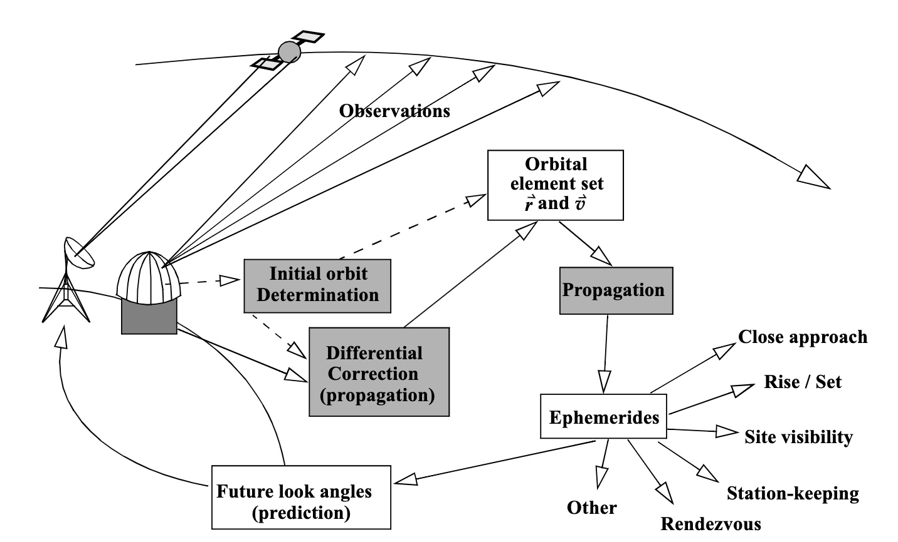
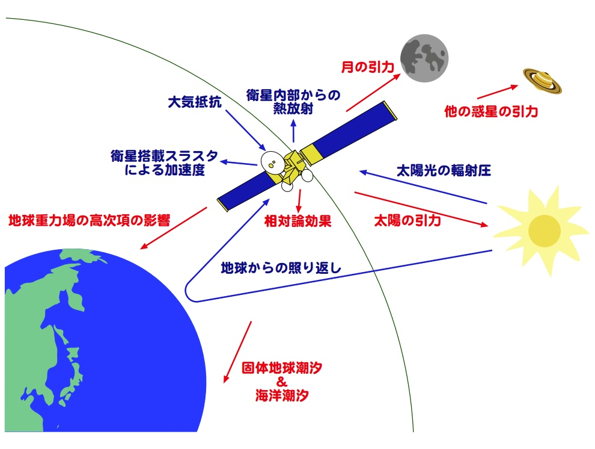

5.1) 軌道決定問題の定式化#
目的
軌道決定問題の概要と統計的アプローチの必要性を理解する。
STM（State Transition Matrix）の定義と性質を理解する。
STMを用いて、任意時刻の観測量と特定時刻の状態量を紐づけられるようになる。
5.1.1) 軌道決定とは何か#
軌道決定（Orbit Determination; OD）は、複数の観測量（e.g. レンジ、ドップラー、測角情報、光学画像）から、ある時刻における衛星の状態（e.g. 位置・速度の軌道6要素）と、必要なら物理パラメータ（e.g. 抗力係数 \(C_D\)、\(J_2, J_3\)項、各種バイアス）を推定し、その不確かさを同時に示す手続きである。軌道決定の結果、主に以下の3点が得られる。
推定されたエフェメリス
推定量の不確定性（e.g. 誤差楕円）
予測の整合性指標（e.g. O-Cカーブ）
これらの情報は、「いつ・どれだけ軌道修正マニューバを打つか」「どの局でいつ衛星と通信するか」など、運用上の重要な意思決定につながる。したがって、軌道決定は人工衛星を安全かつ効率的に運用する上で、不可欠な技術と言えるだろう。
{kind=link}

軌道決定フローの概念図, 出典：Accurate Orbit Determination from Short-arc Dense Observational Data, David A. Vallado and Scott S. Carter
5.1.2) なぜ”統計的”なのか#
軌道決定では、主に2種類の不確実性が関係している。
観測ノイズについては、熱雑音等の観測機器の受信側に起因したノイズ、電離層・対流圏といった対象物-観測機器間の環境に起因したノイズ等、が挙げられる。 一方、モデルの不完全性については、力学モデル・観測モデルの２種類に大別され、前者については摂動力を考慮すると複雑のモデル化が必要となり、実環境とモデル化の間に誤差が生じうる。
つまり、軌道決定における“真値”は常に未知かつ揺らぐものであると言える。したがって推定値は単なる数値ではなく、”不確かさ”と不可分でなければ、信頼して意思決定に使うことはできない。ここで統計的枠組み（e.g. 共分散、最小二乗法、最尤推定、情報行列）が必然的に登場する。 本項では、軌道決定問題の定式化および関連する統計的枠組みを扱っていこう。
{kind=link}

人工衛星に作用する様々な摂動力, 出典：やさしい軌道力学 - 人工衛星に作用する摂動 -, 久保岡 俊宏
5.1.3) 軌道決定問題の定式化#
続いて、軌道決定問題の定式化について、考えていこう。まず、状態方程式および観測方程式は原則として非線形であるから、その連続時間表現は以下のようになる。
ただし、
\(X(t)\in\mathbb{R}^{n}\)：衛星状態（典型 \(x\) , \(v\) の \(n=6\) 、必要に応じて拡張する）
\(Y_i\) ：時刻 \(t_i\) における観測量
\(\theta,\eta\) ：力学・観測に関わるパラメータ（抗力係数 \(C_D\) 、\(J_2 ,J_3\) 項、カメラの焦点距離 \(f\) など）
\(\varepsilon_i\) ：時刻 \(t_i\) における観測量における観測ノイズ（平均 \(0\) 、共分散 \(R_i\!\succ\!0\) の白色ガウスノイズを想定）
とする。 上記の定式化のもとで、状態量\(X(t)\)を推定することは非線形推定問題に相当するが、ここでは簡単のために、線形推定理論に帰着させることを考える。
具体的には、衛星の参照軌道 \(X^{\!*}(t)\) が得られていると仮定して、その周りで状態方程式を一次化（テイラー展開）すると、
ここで、
とおき、2次以上の項 \(\mathcal O(\|x\|^2)\) を無視すると、偏差 \(x(t)=X(t)-X^{\!*}(t)\) を用いて、
の線形状態方程式が得られる。
同様に、観測方程式に対しても同様の操作を行う。
観測残差 \(y_i\), ヤコビアン \(\tilde H_i\)を以下のように定義する。
なお、\(\tilde H_i\) は「ある時刻状態量の観測量」に対する感度を表す。
2次以上の項 \(\mathcal O\!\big(\|x(t_i)\|^2\big)\) を無視すると、以下の線形観測方程式が得られる。
ここで、もう一度出発点に戻って考えてみよう。上記の定式化を踏まえると、得られた観測量 \(z_i\) および線形化方程式 を用いて、未知状態量 \(x(t_i)\) を求めるのが、解くべき軌道決定問題となる。しかし、未知量 \(x(t_i)\) が時刻ごとに異なると、推定する状態量の数が増えて煩雑になるため、基準時刻の未知 \(x_0\) に揃えたいというモチベーションが生じる。これが、次の項で扱う 状態遷移行列（STM） の導入につながる。
5.1.4) 状態遷移行列（STM）の導入#
先ほど得た線形時変系の解を、初期状態 \(x_0\) に線形に写す行列写像 \(\Phi(t,t_0)\) で
と定義する。この写像行列 \(\Phi(t,t_0)\) を 状態遷移行列(State Transition Matrix: STM) と呼ぶ。
この定義をもとに、STMの性質を説明していこう。
初期条件
STM は基準時刻 \(t_0\) において単位行列に一致する：
Proof.
定義 \(x(t)=\Phi(t,t_0)x_0\) に \(t=t_0\) を代入すると
一方、初期条件より \(x(t_0)=x_0\)。任意の \(x_0\) に対して成り立つので
合成性
任意の \(t_2\ge t_1\ge t_0\) に対して
が成り立つ。つまり、区間を分割してそれぞれの遷移行列を掛け合わせると、全区間の遷移行列に等しい。
Proof.
関数
を考えると、
かつ
したがって \(\Psi\) は初期値問題 \(\dot Z=A(t)Z,\ Z(t_0)=I\) の解であり、解の一意性から
逆行列の性質
STM は可逆で、逆方向の STM が逆行列に等しい：
Proof.
合成性から
ゆえに \(\Phi(t_0,t)\) は \(\Phi(t,t_0)\) の両側逆であり、行列の一意性より
従って \(\Phi(t,t_0)\) は全ての \(t\) に対して可逆。
STMの微分方程式
STM 自身は次の行列微分方程式を満たす：
Proof.
任意の固定ベクトル \(x_0\) に対して \(x(t)=\Phi(t,t_0)x_0\)。両辺を \(t\) で微分すると
一方、系そのものから \(\dot x(t)=A(t)\,x(t)=A(t)\,\Phi(t,t_0)\,x_0\)。任意の \(x_0\) に対し
初期条件 \(\Phi(t_0,t_0)=I\) は 先ほど示した通り。
5.1.5) 観測量 \(y_i\) と 状態量 \(x(t_k)\) の紐付け#
5.3) で得た状態方程式、観測定式において、未知状態量 \(x(t_i)\) はそれぞれの観測量 \(y_i\) に応じて存在する。このままだと、未知状態量の数が多く煩雑なため、STMを用いて、全ての観測量 \(z_i\) を特定時刻の状態量 \(x(t_k)\) に紐付けたいというモチベーションが生じる。具体的には、\(l \times n\) の未知数を \(n\) に減らすことを考える。
\(x(t_i)=\Phi(t_i,t_0)x_0\) を各時刻の観測方程式に代入すると、
ここで、
と定義すると、各時刻の観測方程式は下式のように1本の線形方程式にまとめることができる。
以上より、非線形かつ多時刻の観測方程式は STMを用いて、1本の線形方程式に帰着することができた。次項から、この線形方程式を用いて、未知量 \(x(t_k)\) を求める問題を考えていこう。
5.1.6) 例題#
問題
時不変線形系 \(\dot X(t)=A X(t)\) の状態遷移行列が
で与えられる。行列 \(A\) を求めよ。
解答
時不変なら \(\Phi(t,0)=e^{At}\) 。よって
設定
状態 \(\mathbf x=[x\ \dot x\ \ddot x]^\top\)
(a) 1 次系
(b) STM の直接計算
\(A^3=0\)（nilpotent matrix）より
(c) 指数表示の級数
(d) 逆行列 (\Phi^{-1}(t,0)=\Phi(0,t))